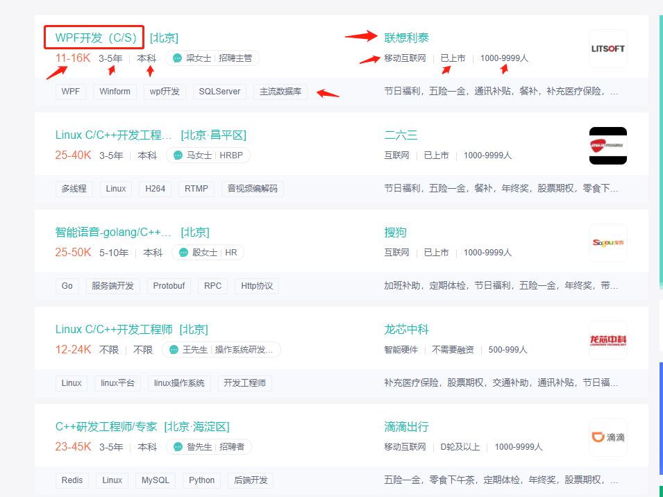
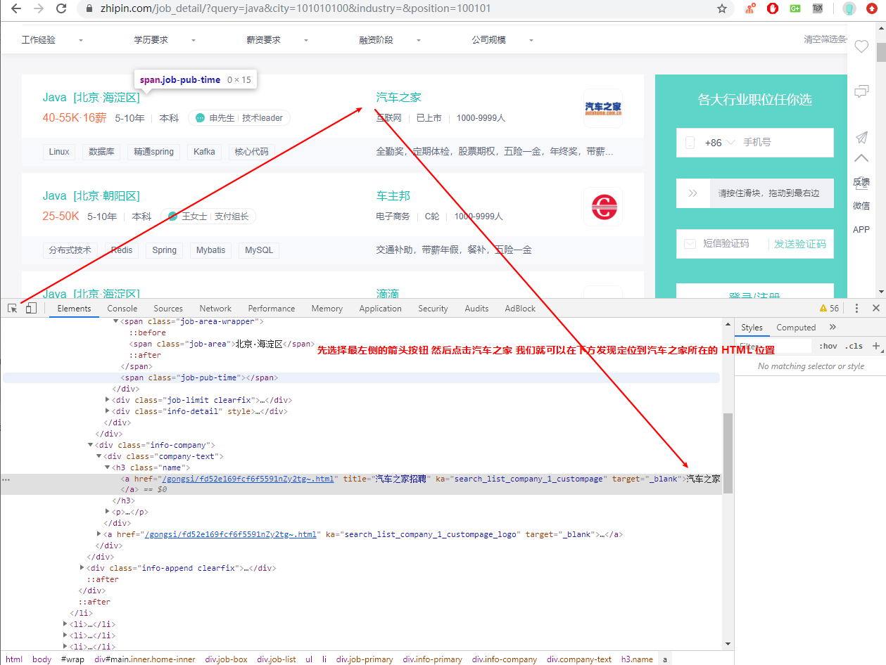
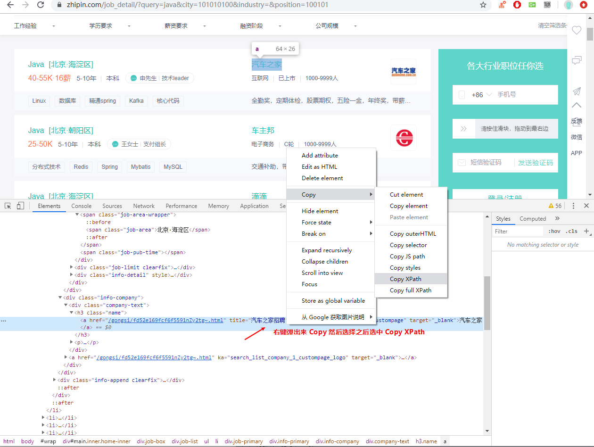
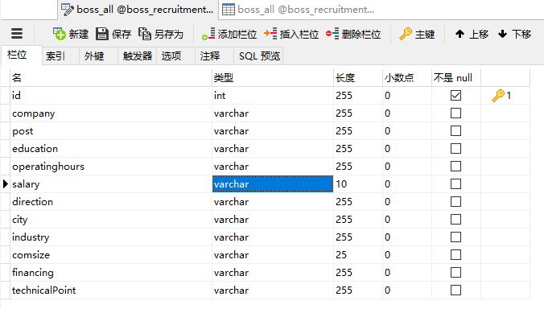
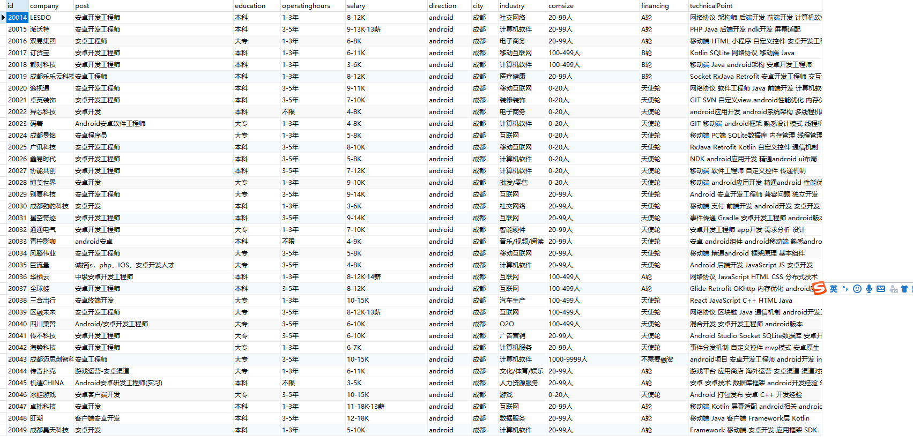
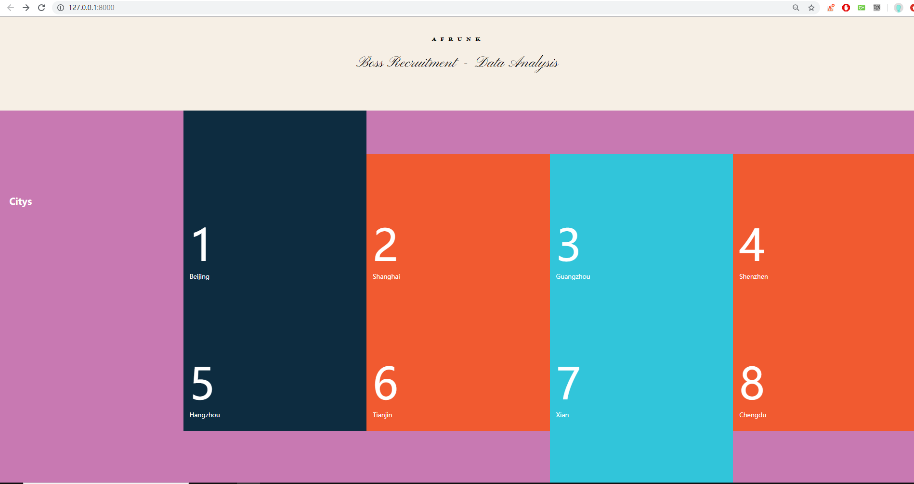
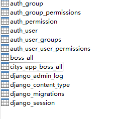
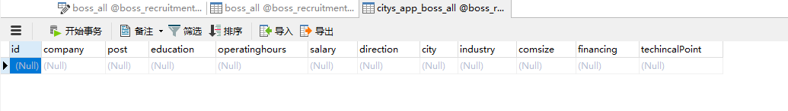
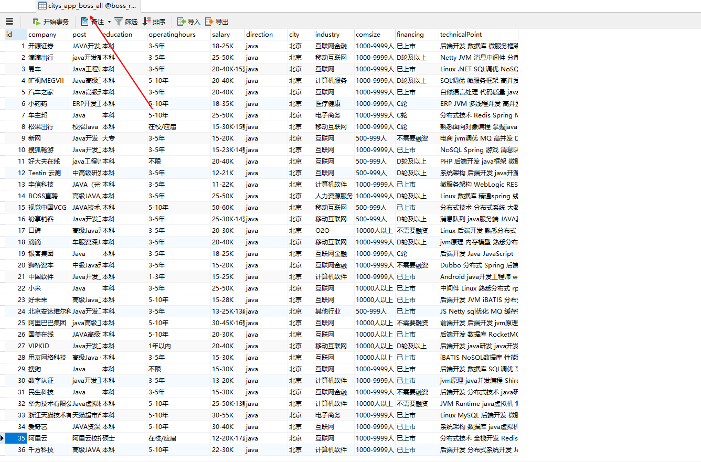
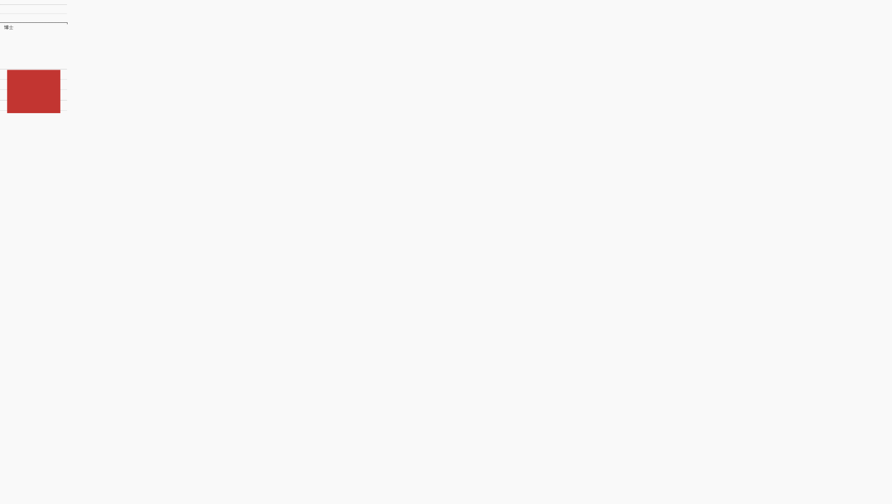

Boss Recruitment Data Analysis
文章目录
抓取 Boss 直聘 北京，上海，广州，深圳，杭州，天津，西安，武汉，长沙，成都，郑州，重庆 12个城市的招聘数据，进行可视化分析。需要实现如下效果：
- 12个城市七个类目招聘信息的数据可视化部分
- 数据可视化需要有两个柱状图和一个数据分析总结
本文的开发环境
Spyder
这里整理下思路，之前使用的是 Request、BeautifulSoup 来尝试获取页面信息，但是 Boss 直接反爬掉了，于是才有 Selenium 模拟浏览器的方法来抓取。
Part 0 如何使用 Selenium
首先我们需要安装 selenium ,在 Terminal 中输入 pip install selenium 即可实现安装。 Selenium 是一个用于 Web 应用程序测试的工具。直接在浏览器中运行，就像真正的用户在操作一样。支持包括但不限于 Chrome 和 Firefox。 Selenium 的核心 Selenium Core 基于 JsUnit ，完全由 JavaScript 编写，因此可以用于任何支持 JavaScript 的浏览器上。
这里要说一下比较重要的 PhantomJS,它是一个基于 WebKit 的服务器端 JavaScript API，支持浏览器而不需要浏览器支持，其快速，原生支持各种 Web 标准：Dom 处理，CSS 选择器，JSON 等等。PhantomJS 可以用于页面自动化、网络监测、网页截图以及无界面测试。
1 | from selenium import webdriver |
上述代码运行后，会自动打开 Chrome 浏览器，并打开百度首页，在终端输出百度首页的源代码，然后关闭浏览器。
Part 1 破解 Selenium 被识别问题
一开始我直接使用 Selenium 模拟的方法来抓取，但是 Boss 仍然可以识别到，我们尝试下面的模拟登陆的方式来躲避识别。
1 | from selenium import webdriver |
将下面的代码中的添加到我们的 Webdriver 的声明中即可躲过反爬1
2option = webdriver.ChromeOptions()
option.add_experimental_option('excludeSwitches', ['enable-automation'])
Part 2 定位元素
我们需要获取的是如下图所示的字段信息

如何来定位这些元素呢？我们打开 Chrome 浏览器，点击到我们的 公司名字 位置，右键检查，然后点击箭头选中位置

然后选择下方的 HTML 内容位置，右键 Copy - Copy XPath

Copy 出来的代码如下 //*[@id="main"]/div/div[2]/ul/li[1]/div/div[1]/div[2]/div/h3/a,但是这只能定位到一个元素，如何去定位到列表的所有元素呢？我们再来选择一家招聘公司的名称,执行上面同样的操作 //*[@id="main"]/div/div[2]/ul/li[2]/div/div[1]/div[2]/div/h3/a，由此可见不同的公司名称之间的区别就在于它们分别位于第几个 li 中。
这样子的话我们直接进行一个 for 循环，然后拼接成合适的定位元素，然后使用 .text 方法来获取文本内容，即可实现内容的抓取。
1 | # 薪资 |
Part 3 翻页 城市定位 分类
1 | # 城市名和城市代码同步定位 城市名入库数据库 城市代码用于拼接访问链接 |
Part 4 数据库表
为了避免重复抓取，所以构建了一个主键 id ，在最外层赋值为1，后续自增。抓取的数据字段只有9个，但是为了后续方便进行数据可视化，添加了额外的三个字段，即前面提到的主键 id 、城市、技术方向。

Part 5 整合代码
1 | """ |
总共有 25781 条数据，具体字段如下

Django
有了数据之后我们需要通过 Echart 和 Django 的组合将其展示在 Web 页面上。
Start Django
我们使用 Pycharm 创建一个 Django Project，在设置中设置时区和语言，配置数据库的部分以及静态文件的引入路径
Boss_Recruitment/settings.py1
2
3
4
5
6
7
8
9
10
11
12
13
14
15
16
17DATABASES = {
'default': {
'ENGINE': 'django.db.backends.mysql',
'NAME': "boss_recruitment", # 数据库名
'USER':"root",#用户名
'PASSWORD':"password",#用户密码
'HOST':"127.0.0.1"
}
}
LANGUAGE_CODE = 'zh-hans' # 语言
TIME_ZONE = 'Asia/Shanghai' # 时区
STATIC_URL = '/static/'
STATICFILES_DIRS =[
os.path.join(BASE_DIR,'static')
]
APP
有了 Project 之后，我们需要为后续的可视化新建一个 APP。进入 Terminal，输入如下命令创建 python manage.py startapp citys_app，然后我们就可以看到在该 Django 项目下有一个 citys_app 的文件夹，我们需要再次回到主项目的设置文件中将我们刚刚新建的 APP 进行注册
Boss_Recruitment/settings.py1
2
3
4
5
6
7
8
9
10INSTALLED_APPS = [
'django.contrib.admin',
'django.contrib.auth',
'django.contrib.contenttypes',
'django.contrib.sessions',
'django.contrib.messages',
'django.contrib.staticfiles',
'citys_app'
]
Index
根据 MTV 原则，我们首先需要配置路由和视图函数。
Boss_Recruitment/urls.py1
2
3
4
5
6
7
8
9# 导入 citys_app 中的视图函数 方便调用函数
from citys_app import views
urlpatterns = [
path('admin/', admin.site.urls),
# 首页调用视图函数
# 给 HTML 的跳转链接的 {% url 'home'%}即可实现点击的跳转
path('',views.home,name='home'),
]
citys_app/views.py1
2
3
4
5from django.shortcuts import render
# 首页
def home(request):
return render(request,'index.html')
需要注意两个部分的位置是不同的，我们直接在主项目的路由文件中引入我们的 APP 文件的视图函数即可实现路由和视图函数的连接。
templates/index.html 该文件改版自 CSS禅意花园 此外我们需要将 css 文件导入到 static/css 下，然后我们在 HTML 的头部使用 load static 就可以在 css 引用中使用 static 'css/index.css 实现静态文件的引入。1
2
3
4
5
6
7
8
9
10
11
12
13
14
15
16
17
18
19
20
21
22
23
24
25
26
27
28
29
30
31
32
33
34
35
36
37
38
39
40
41
42
43
44
45
46
47
48
49
50
51
52
53
54
55
56
57
58
59
60
61
62
63
64
65
66
67
68
69
70
71
72
73
74
75
76
77
78
79
80
81
82
83
84
85
86
87
88
89
90
91
92
93
94
95
96
97
98
99
100
101
102
103
104
105
106
107
108
109
110
111
112
113
114
115
116
117
118
119
120
121
122
123
124
125
126
127{% load static %}
<html lang="en">
<head>
<meta charset="utf-8">
<title>Boss Recruitment - Data Analysis</title>
<link rel="stylesheet" media="screen" href="{% static 'css/index.css' %}">
<link rel="alternate" type="application/rss+xml" title="RSS" href="http://www.csszengarden.com/zengarden.xml">
<meta name="viewport" content="width=device-width, initial-scale=1.0">
<meta name="author" content="Dave Shea">
<meta name="description" content="A demonstration of what can be accomplished visually through CSS-based design.">
<meta name="robots" content="all">
<style>
/* 头部的艺术字 */
h2{
font-family:"CrimsonRoman", georgia, times, serif;
background-color:#c879b2;
margin: 2.5em 10% 0;
font-size:18px;
line-height:24px;
font-weight:bold;
text-align:center;
font-variant:small-caps;
word-spacing:.5em;
letter-spacing:.6em;
background-color: #f6efe5;
}
h1 {
font-size:40px;
line-height:96px;
font-family:"Pinyon Script", cursive;
margin:4px 0 -4px;
text-align:center;
font-weight:normal;
position:relative;
}
</style>
<link href='http://fonts.googleapis.com/css?family=Pinyon+Script'
rel='stylesheet' type='text/css'>
</head>
<body id="css-zen-garden">
<h2>afrunk</h2>
<h1>Boss Recruitment - Data Analysis</h1>
<div class="page-wrapper">
<aside class="sidebar" role="complementary">
<div class="wrapper">
<div class="design-selection" id="design-selection">
<h3 class="select">Citys</h3>
<nav role="navigation">
<ul>
<li>
<a href="Fonet-end training notes\index.html" class="design-name">Beijing</a>
</li> <li>
<a href="/220/" class="design-name">Shanghai</a>
</li> <li>
<a href="/219/" class="design-name">Guangzhou</a>
</li> <li>
<a href="/218/" class="design-name">Shenzhen</a>
</li> <li>
<a href="/217/" class="design-name">Hangzhou</a>
</li> <li>
<a href="/216/" class="design-name">Tianjin</a>
</li> <li>
<a href="/215/" class="design-name">Xian</a>
</li> <li>
<a href="/214/" class="design-name">Chengdu</a>
</li> </ul>
</nav>
</div>
<!-- <div class="design-archives" id="design-archives">
<h3 class="archives">Archives:</h3>
<nav role="navigation">
<ul>
<li class="next">
<a href="/214/page1">
Next Designs <span class="indicator">›</span>
</a>
</li>
<li class="viewall">
<a href="http://www.mezzoblue.com/zengarden/alldesigns/" title="View every submission to the Zen Garden.">
View All Designs </a>
</li>
</ul>
</nav>
</div> -->
<div class="zen-resources" id="zen-resources">
<!-- <h3 class="resources">Resources:</h3> -->
<!-- <ul> -->
<!-- <li class="view-css">
<a href="style.css" title="View the source CSS file of the currently-viewed design.">
View This Design’s <abbr title="Cascading Style Sheets">CSS</abbr> </a>
</li> -->
<!-- <li class="css-resources">
<a href="http://www.mezzoblue.com/zengarden/resources/" title="Links to great sites with information on using CSS.">
<abbr title="Cascading Style Sheets">CSS</abbr> Resources </a>
</li>
<li class="zen-faq">
<a href="http://www.mezzoblue.com/zengarden/faq/" title="A list of Frequently Asked Questions about the Zen Garden.">
<abbr title="Frequently Asked Questions">FAQ</abbr> </a>
</li>
<li class="zen-submit">
<a href="http://www.mezzoblue.com/zengarden/submit/" title="Send in your own CSS file.">
Submit a Design </a>
</li>
<li class="zen-translations">
<a href="http://www.mezzoblue.com/zengarden/translations/" title="View translated versions of this page.">
Translations </a>
</li> -->
<!-- </ul> -->
</div>
</div>
</aside>
</div>
</body>
</html>

Models
做好了首页之后，我们需要来构建 Model ，并将我们之前存入数据库表 boss_all 内的数据都存入后续 Django Models 中。因为我们只需要做可视化，不需要其他的任何操作，所以构建一个表即可，这个表的字段和我们之前的 boss_all 的字段一致。
citys_app/models.py1
2
3
4
5
6
7
8
9
10
11
12
13
14
15
16
17
18
19
20
21
22
23
24
25
26
27
28
29from django.db import models
# Create your models here.
# 招聘信息表
class Boss_all(models.Model):
# id 唯一主键
id = models.IntegerField(primary_key=True,unique=True,default=0)
# 公司名
company = models.CharField(max_length=255)
# 职位名
post = models.CharField(max_length=255)
# 教育背景
education = models.CharField(max_length=255)
# 工作经验
operatinghours = models.CharField(max_length=255)
# 薪水
salary = models.CharField(max_length=50)
# 技术方向 java c ..
direction = models.CharField(max_length=50)
# 城市
city = models.CharField(max_length=25)
# 公司行业
industry = models.CharField(max_length=255)
# 公司规模
comsize = models.CharField(max_length=50)
# 融资情况
financing = models.CharField(max_length=50)
# 技术关键词
techinacalPoint = models.CharField(max_length=255)
构建好 Models ，我们需要将数据迁移到数据库，在 Terminal 中执行如下语句即可1
2
3
4
5
6
7
8
9
10
11
12
13
14
15
16
17
18
19
20
21
22
23
24
25
26
27(base) Boss_Recruitment>python manage.py makemigrations
Migrations for 'citys_app':
citys_app\migrations\0001_initial.py
- Create model Boss_all
(base) Boss_Recruitment>python manage.py migrate
Operations to perform:
Apply all migrations: admin, auth, citys_app, contenttypes, sessions
Running migrations:
Applying contenttypes.0001_initial... OK
Applying auth.0001_initial... OK
Applying admin.0001_initial... OK
Applying admin.0002_logentry_remove_auto_add... OK
Applying admin.0003_logentry_add_action_flag_choices... OK
Applying contenttypes.0002_remove_content_type_name... OK
Applying auth.0002_alter_permission_name_max_length... OK
Applying auth.0003_alter_user_email_max_length... OK
Applying auth.0004_alter_user_username_opts... OK
Applying auth.0005_alter_user_last_login_null... OK
Applying auth.0006_require_contenttypes_0002... OK
Applying auth.0007_alter_validators_add_error_messages... OK
Applying auth.0008_alter_user_username_max_length... OK
Applying auth.0009_alter_user_last_name_max_length... OK
Applying auth.0010_alter_group_name_max_length... OK
Applying auth.0011_update_proxy_permissions... OK
Applying citys_app.0001_initial... OK
Applying sessions.0001_initial... OK
然后我们就可以在数据库的 boss_recruitment 库下找到如下的表和我们最关注的 boss_all Model 的实例化，在数据库中他会被命名为 citys_app_boss_all


Data
有了数据库的表之后，我们需要将之前的抓取到的数据编写一个入库脚本，将数据都迁移到 Django Models 中去。
data_makemigrations.py1
2
3
4
5
6
7
8
9
10
11
12
13
14
15
16
17
18
19
20
21
22
23
24
25
26
27
28
29
30
31
32
33
34
35
36
37
38
39
40
41
42'''
将爬虫表中的数据迁移到 Django Models 中去
'''
import pymysql
db = pymysql.connect(host='127.0.0.1',
port=3306,
user='root',
password='password',
db='boss_recruitment',
charset='utf8')
cursor = db.cursor()
sql_1 = 'select * from boss_all'
cursor.execute(sql_1) # 执行查询
# 列表化
contents = cursor.fetchall()
# 遍历数据
for content in contents:
print(content)
# 入库操作
sql_2 = """
INSERT IGNORE INTO citys_app_boss_all (id,company,post,education,operatinghours,salary,direction,city,industry,comsize,financing,technicalPoint)
VALUES('{}','{}','{}','{}','{}','{}','{}','{}','{}','{}','{}','{}' )
""" \
.format(
content[0],
pymysql.escape_string(content[1]),
pymysql.escape_string(content[2]),
pymysql.escape_string(content[3]),
pymysql.escape_string(content[4]),
pymysql.escape_string(content[5]),
pymysql.escape_string(content[6]),
pymysql.escape_string(content[7]),
pymysql.escape_string(content[8]),
pymysql.escape_string(content[9]),
pymysql.escape_string(content[10]),
pymysql.escape_string(content[11]),
)
# print(sql_2)
cursor.execute(sql_2) # 执行命令
db.commit() # 提交事务
很快，2万多条数据就直接进入到我们的 citys_app_boss_all 表中了，现在我们只需要写可视化页面即可。

Echart And Django
现在我们要使用 Django 的路由协议实现传入不同的城市参数，在同一个 HTML 页面上展示不同城市的数据可视化效果
我们需要了解 Django 的最新路由协议,如何来通过路由传入的参数实现视图函数通过不同参数的查询，并将结果反馈给前端。
HTML、路由和视图函数 如何绑定
为什么我们在 HTML 页面中点击某个 a 标签的时候他可以正确的跳转到某个路由呢？我们先将实现这一效果的部分代码在下面进行解析
templates/data_analysis.html1
2
3<li>
<a href="{% url 'dataAnalysis' '北京' %}" class="design-name">Beijing</a>
</li>
这是我们在 HTML 页面，也就是首页中设置的跳转链接，主要注意 href 中的文字，这种写法是固定的。你必须在外面写上 大括号+百分号 ，否则无法奏效。其次我们为了能和路由的链接绑定起来，先声明为 url 即路由，再绑定我们在 路由设置中声明的别名，如果该路由设置需要传入参数，则在后面添加参数。为了更好的理解这段代码，我们将路由的设置也附上。
Boss_Recruitment/urls.py1
2# 将城市路由和视图函数绑定 传入城市参数 视图函数查询当前城市的数据 进行展示
path('/<str:city>',views.data_analysis,name ='dataAnalysis'),
- 我们在路由中使用
<>的方式定义参数，如果该参数为字符串，则为str，如果是整型，则为int。 - name 是别名，也就是我们在 HTML 页面中
url后面的名称 是为了与路由可以进行绑定 - 调用的视图函数我们也需要设置额外的接受参数，以便浏览器访问该路由时传过来的参数可以接受参与将其用于数据库的查询，避免报错。
citys_app/views.py1
2
3
4# 可视化页面
# 需要传入2个参数 request 和 city 方便我们查找各个城市的数据
def data_analysis(request,city):
return render(request,'data_analysis.html')
接受路由在 HTML 页面传给视图函数的参数 city，在上面我们解析的页面中该参数为 北京。然后通过对数据库的查询得到我们需要的城市的招聘数据，对其进行清洗，通过 Ajax 的方式传递给前端页面，然后使用 Echart 进行渲染得到可视化效果。
完善视图函数
该函数还只是可以通过传入不同的参数，都调用 data_analysis.html 页面，我们想要的是可以通过传入的参数查询数据库，并将不同的参数路由在同一个 HTML 页面上展示不同的可视化效果。
所以我们先来查询和清洗数据库的数据，拼接成我们需要的数据格式，再传递给前端页面。
首先，我先查询数据库的数据，然后做一个数据预处理。将某个地区的所有学历分布和平均薪资进行一个汇总得到两个列表
django_analysis.py1
2
3
4
5
6
7
8
9
10
11
12
13
14
15
16
17
18
19
20
21
22
23
24
25
26
27
28
29
30
31
32
33
34
35
36
37
38
39
40
41
42
43
44
45
46
47
48
49
50
51
52
53
54
55
56
57
58
59
60
61
62
63
64
65
66
67
68
69
70
71
72
73
74
75
76
77
78
79
80
81
82
83
84
85
86
87import pandas as pd # 使用pandas处理数据库的数据
# 配置 pymysql 方便 pandas 调用
import pymysql
db = pymysql.connect(host='127.0.0.1',
port=3306,
user='root', # 数据库用户名字
password='password', # 数据库密码
db='boss_recruitment',# 数据库的名字
charset='utf8')
cityKey='北京'
courses = pd.read_sql('select * from citys_app_boss_all', db)
# print(type(courses))
# 提取某个城市的数据进行数据处理 提取需要进行可视化展示的部分
data = courses[courses['city'] == cityKey]
# 清洗数据 去除空值
resultData = data.dropna(axis=0,how='any',thresh=None,subset = None,inplace=False)
# 学历划分
education_list =['本科','专科','硕士','博士']
# 上面构建好的各个数据库的名称合并后的方向分类列表
direction_list =["java", "python", "php", "android", "index", "c","data"]
nums_list = []
# 存储每个方向的一个学历列表 二维列表
directions_list = []
# 遍历列表 将每个方向的数据进行提取 获取整体的数据
for i in direction_list:
directions = [0,0,0,0]
# 对给个方向的数据进行计数 然后转化为字典 方便后续遍历整理成列表形式
educations = dict(resultData[resultData['direction']==i]['education'].value_counts())
# 删除空缺值
try:
educations.pop('')
except:
pass
# 遍历字典
for key in educations:
if key=='本科':
directions[0] = educations[key]
elif key == '大专':
directions[1] = educations[key]
elif key == '硕士':
directions[2] = educations[key]
else:
directions[3] = educations[key]
directions_list.append(directions)
print(directions_list)
# 所有学历的列表人数
all_directions_list =[0,0,0,0]
# 遍历分类的列表中的数据 然后将本科、专科、硕士、博士的数据进行累加
for i in range(len(directions_list)):
# 累加本科
all_directions_list[0] +=directions_list[i][0]
all_directions_list[1] += directions_list[i][1]
all_directions_list[2] += directions_list[i][2]
all_directions_list[3] += directions_list[i][3]
print(all_directions_list)
# 薪资水平可视化
# result['xinzi']
pattern = '\d+'
# 将数据中的横线去掉
resultData['salary'] = resultData['salary'].str.findall(pattern)
# 存储我们求出后的平均工资
avg_salary_list = []
for k in resultData['salary']:
# 遍历去掉横线后的两端工资
try:
int_list=[0,0]
int_list = [int(n) for n in k][:2]
# print(int_list)
# 求平均工资
avg_salary =(int_list[1] + int_list[0])/2
# print(avg_salary)
# # 添加到列表然后赋值给DataFrame变量
avg_salary_list.append(avg_salary)
except:
avg_salary_list.append(0)
# 计算出来工资区间的平均值之后复制给我们的DataFrame变量
resultData['salary'] = avg_salary_list
mean_salary = []
# 求某一个分区的平均工资是多少
for i in direction_list:
# print(resultData[resultData['direction']==i]['salary'].mean())
mean_salary.append(resultData[resultData['direction']==i]['salary'].mean())
# 行业的平均工资
print(mean_salary)
然后将这两个列表传入给 HTML 页面，总结到视图函数中去
citys_app/views.py
1 | # 可视化页面 |
Echart Ajax 调用数据可视化
数据传递给了前端，到了这里，我们就需要使用 Echart 来进行数据可视化了。
templates/data_analysis.html1
2
3
4
5
6
7
8
9
10
11
12
13
14
15
16
17
18
19
20
21
22
23
24
25
26
27
28
29
30
31
32
33
34
35
36
37
38
39
40
41
42
43
44
45
46
47
48
49
50
51
52
53
54
55
56
57
58
59
60
61
62
63
64
65
66
67
68
69
70
71
72
73
74
75
76
77
78
79{% load static %}
<!DOCTYPE html>
<html lang="en">
<head>
<meta charset="UTF-8">
<title>Data Analysis / {{ cityKey }} </title>
<style>
{# 设置文字和可视化图表居中对齐 #}
.center{
margin:0 auto;width:1500px; text-align:center;
}
</style>
</head>
<body>
<div class="center">
<h1><a href="{% url 'home' %}">Data analysis </a>- {{ cityKey }}</h1>
<div class="main_table t_btn3" id="chart_1" style="width: 100%; height: 280px; -webkit-tap-highlight-color: transparent; user-select: none; position: relative;"></div>
<div class="main_table t_btn3" id="chart_2" style="width: 100%; height: 280px; -webkit-tap-highlight-color: transparent; user-select: none; position: relative;"></div>
<div class="main_table t_btn3" id="chart_3" style="width: 100%; height: 280px; -webkit-tap-highlight-color: transparent; user-select: none; position: relative;"></div>
<script src="{% static 'js/echarts.js' %}"></script>
<script type="text/javascript">
// 基于准备好的dom，初始化echarts实例
console.log(name);
var myChart1= echarts.init(document.getElementById('chart_1'));
// 指定图表的配置项和数据
var option1 = {
title: {
text: '{{ cityKey }}学历人数柱状图'
},
tooltip: {},
legend: {
data:['学历人数']
},
xAxis: {
data: {{ education_list|safe }}
},
yAxis: {},
series: [{
name: '学历人数',
type: 'bar',
data:{{ all_directions_list|safe }}
}]
};
// 使用刚指定的配置项和数据显示图表。
myChart1.setOption(option1);
var myChart2= echarts.init(document.getElementById('chart_2'));
// 指定图表的配置项和数据
var option2 = {
title: {
text: '{{ cityKey }}平均工资柱状图'
},
tooltip: {},
legend: {
data:['平均工资']
},
xAxis: {
data: {{ direction_list|safe }}
},
yAxis: {},
series: [{
name: '平均工资',
type: 'bar',
data:{{ mean_salary|safe }}
}]
};
// 使用刚指定的配置项和数据显示图表。
myChart2.setOption(option2);
</script>
</div>
</body>
</html>

Conclusions
难点分析
- 一开始的难点在于爬虫的实现，如何躲开反爬策略。
- 其次在于如何将路由、HTML、视图函数的参数传递流程理清楚。
- 最后是如何实现 AJAX 和 Echart 数据的交互。
只要搞清楚了这三个点，本项目基本上没有难以理解的地方。
效果如下

Reference
- Boss直聘招聘信息爬取 :
Selenium的常用写法 ,代码过期 仅供参考 - Boss直聘爬虫第2弹：selenium找不到元素的常见问题 ： 解决模拟登陆被识别
Selenium的问题 - Django 基础教程